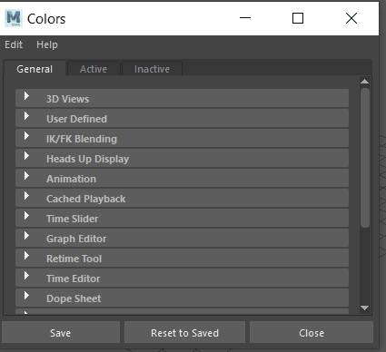
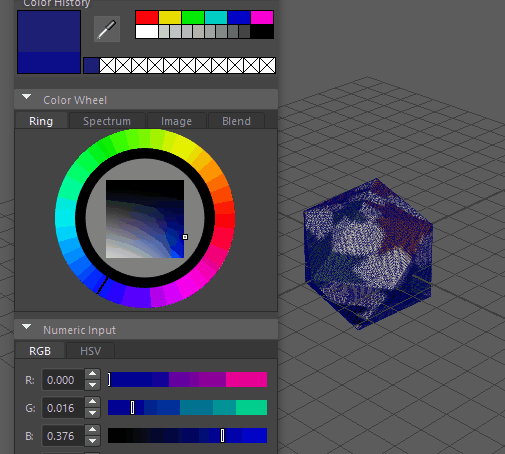
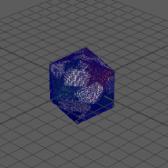

某些颜色设置具有额外的 Alpha 通道，可用于更改 UI 元素的透明度。您可以使用它来更改对象线框颜色的透明度，如果网格非常密集而您想要更清晰地看到纹理，则此选项将非常有用。

“活动”(Active)选项卡
- 常规(General)：模板、亮显、前导对象
- 对象(Objects)：多边形曲面
- 平滑网格预览(Smooth Mesh Preview)：亮显
“非活动”(Inactive)选项卡
-
- 常规(General)：模板、引用层
- 建模(Modeling)：实时
- 对象(Objects)：多边形曲面
更改对象线框的透明度：
- 打开颜色设置(Color Settings)窗口。

- 如果要降低不透明度的颜色是选定对象，请单击“活动”(Active)选项卡，如果不是，请单击“非活动”(Inactive)选项卡。
在此示例中，未选择多边形，因此我们选择“非活动”(Inactive)选项卡，展开“常规”(General)组，然后双击“多边形曲面”(Polygon Surfaces)颜色平铺。
这将打开颜色选择器(Color Chooser)。
- 在“颜色选择器”(Color Chooser)中，转到“数值输入”(Numeric Input)区域。“透明度”(Transparency)设置用 A（对于 Alpha 通道）表示。移动滑块以更改线框不透明度的降低量。

- 单击“完成”(Done)。
在此示例中，我们希望降低多边形的非活动线框的不透明度，因为它会遮挡图案。

线框太暗，无法查看下方的图案